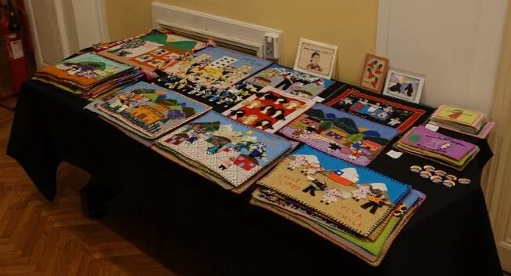

En mayo de 2026, el Servicio Nacional del Patrimonio Cultural de Chile difundió un catálogo para ayudar a identificar treinta arpilleras reportadas como extraviadas. La colección, Memorias (a)puntadas: nuestro lugar en la historia, había sido realizada por cultoras de la Región Metropolitana en 2023 y estaba bajo resguardo en el sitio de memoria Villa Grimaldi. El aviso institucional no determina si hubo hurto: informa de una denuncia y de una investigación. La precisión importa. Las páginas del catálogo muestran cada pieza, atribuyen un nombre y una autora, y hacen posible reconocerla fuera de la exposición. Son, a la vez, un registro de lo perdido y una herramienta para buscarlo. La fotografía no sustituye al objeto, pero sin la fotografía y sus datos muchas búsquedas comenzarían a ciegas. [1]
Entre las obras reproducidas figura Desaparecidos, de Mayra Bustos Alarcón. El catálogo permite distinguir una escena de casas, montañas, río, peces y personas, y una pregunta escrita dentro del paisaje: «¿Dónde está mi abuelo?». La pregunta no aparece en una página aparte ni en el pie que la explica. Forma parte del espacio representado. La obra reúne en un mismo plano un territorio reconocible y la ausencia de alguien. También aparece La Recesión, de María Eugenia Meza, donde un almacén, figuras y casas sitúan la crisis en una calle. Que estas piezas compartan tamaño aproximado, cincuenta por cuarenta centímetros, no significa que cuenten la misma historia. La escala común hace más visible la diferencia en lo que cada autora decidió poner al frente. [1]
Esa es la primera cuestión de diseño: cómo ordenar una escena para que otras personas puedan verla, leerla y discutirla. Hay que decidir el soporte, seleccionar telas, separar figuras del fondo, fijar una inscripción, elegir qué hecho merece un lugar en una superficie limitada. El resultado se puede colgar, doblar, enviar y vender. La arpillera trabaja en una frontera que las categorías editoriales suelen separar: imagen, testimonio, objeto y medio de subsistencia. Si miramos solo el relato político, perdemos el trabajo material que permitió hacerlo circular. Si nos detenemos únicamente en el oficio, dejamos en segundo plano lo que la pieza intenta decir. [2][3]
Las piezas extraviadas de 2023 no son arpilleras realizadas durante la dictadura chilena. Son obras posteriores que evocan recuerdos, relatos familiares y experiencias colectivas de ese período. El catálogo de búsqueda impide confundir sus fechas porque las registra. También recuerda que conservar no significa simplemente guardar una cosa en un edificio. Exige documentar autoría y trayectos, establecer responsabilidades de custodia y mantener información que permita identificar la obra si sale del lugar previsto. Sobre la recuperación de esa colección no encontré un comunicado oficial posterior al aviso consultado. Este ensayo registra el estado documentado, no presume un desenlace. [1][4]
Una superficie para noticias difíciles
Durante la dictadura iniciada en 1973, los talleres vinculados primero al Comité de Cooperación para la Paz y luego a la Vicaría de la Solidaridad ofrecieron trabajo a mujeres de sectores populares. La Biblioteca Nacional de Chile describe una orientación inicial hacia la capacitación y venta; con el tiempo, las escenas confeccionadas también comunicaron violaciones de derechos humanos. La secuencia evita dos simplificaciones. La denuncia no convirtió mágicamente el bordado en sustento, y la venta no vació de contenido la denuncia. Eran problemas simultáneos para mujeres que necesitaban ingresos y una forma de dar noticia de lo que ocurría. El programa institucional abrió una infraestructura, pero las imágenes concretas surgieron de decisiones de quienes trabajaban en cada taller. [2]
El material disponible condicionó la solución. Un cuaderno de transmisión técnica del Servicio Nacional del Patrimonio Cultural describe bases de osnaburgo o sacos de harina, retazos reciclados, hilvanes, bordados, figuras en relieve y remates con punto festón. No hace falta convertir cada operación en un símbolo del sufrimiento para reconocer su importancia formal. Un tejido recuperado trae un color, un espesor y una resistencia que no se eligen en un catálogo ilimitado. Una forma aplicada proyecta sombra sobre otra. Un borde cosido decide hasta dónde llega el relato y si la pieza resiste la manipulación. El soporte barato no determina un estilo único: ofrece condiciones a partir de las cuales distintas autoras resolvieron imágenes muy diferentes. [3]
El mismo cuaderno observa que en muchas escenas de la Región Metropolitana la cordillera enmarca barrios y hechos cotidianos. Se trata de una referencia territorial, no de un fondo neutro. Una casa hecha de tela puede indicar la vivienda que se levantó con trabajo propio; una calle puede reunir vecinos, comercios y una marcha. En el catálogo de 2026, Amanecer sitiado Población Villa Conchalí. 11.09.1973, de Solange Cortés, nombra lugar y fecha en su título. La composición muestra casas, personas, un tanque y aeronaves bajo una montaña. Es una reconstrucción hecha décadas después: su verdad no depende de fingir que es una fotografía de 1973. Permite leer cómo una autora organiza el recuerdo de un acontecimiento histórico en un territorio preciso. [1][3]
Hay que leer la figura humana a esa escala. Una persona puede reducirse a pocos retazos y puntadas, pero su posición respecto de una puerta, una fila o un vehículo produce una relación. En Desaparecidos, la pregunta por el abuelo vuelve inestable una escena que, sin esas palabras, podría parecer un paisaje cordial. La imagen no se vuelve inteligible solo porque tenga un título. La inscripción incorporada al paño cambia la lectura desde dentro. Del mismo modo, el catálogo no autoriza a deducir la biografía de Mayra Bustos Alarcón a partir de la pregunta: la obra y su ficha identifican una autora y un motivo, no todos los hechos familiares que podrían estar detrás. [1]
Algunos paños históricos añadían mensajes manuscritos en pequeños bolsillos del reverso. El catálogo del Museo de la Memoria y los Derechos Humanos documenta ocho papelillos de esa clase en la colección de la Fundación Solidaridad; en la colección reunida por André y Geneviève Jacques, registra diez mensajes manuscritos entre treinta y dos obras, nueve de ellos guardados en bolsillos. La cifra corresponde a esas colecciones, no a todas las arpilleras de Chile. El reverso cumplía una función editorial: conservaba una explicación que el frente podía sugerir sin detallar. Si una reproducción fotográfica muestra solo la cara visible, deja fuera una parte de la obra y de su voz. El objeto tenía más de una superficie de lectura. [5]
La existencia de esos mensajes modifica también la manera de catalogar. Para una ficha rigurosa no basta con fotografiar el frente, medir ancho y alto y asignar un tema general. Hay que registrar los lados, las costuras, los bolsillos, los textos anexos y las marcas de autoría cuando existan. Algunas piezas conservan iniciales; una de las que describe el museo está firmada por Felicia. Una inicial no equivale automáticamente a un nombre completo. Un título dado por una institución puede convivir con palabras escritas por quien bordó. Mostrar la diferencia entre ambos datos no empobrece el registro; evita atribuir a las autoras decisiones que no sabemos si tomaron. [5]


El museo reproduce cuatro obras sobre Lonquén en la colección de la Fundación Solidaridad. El catálogo muestra, entre otras, Hornos de Lonquén y Mártires de Lonquén. Cambian el orden de figuras, el fondo, el borde y la manera de representar un lugar asociado al hallazgo de restos de detenidos desaparecidos. Que cuatro piezas aborden un mismo episodio demuestra algo más que repetición de un tema: cada composición propone una entrada visual distinta a un acontecimiento. El catálogo permite compararlas, aunque no permite sustituir con su lectura la investigación histórica del caso. La arpillera hace visible una posición y una memoria; las circunstancias del crimen se verifican con otros archivos. [5]
En otra sección del mismo catálogo aparece La cueca sola. La escena se puede leer junto a obras sobre marchas y mujeres familiares de desaparecidos. El montaje editorial del museo permite seguir motivos que saltan de un paño a otro. Sin embargo, también impone una mediación: ordena piezas en una secuencia impresa, reduce su tamaño y selecciona una cara para mostrar. Comparar es útil si se recuerda que esa página es un dispositivo distinto del textil. La fotografía del catálogo permite estudiar contornos y figuras, pero no reproduce el peso del tejido ni el espesor de un aplique. Describir su materialidad exige mirar la pieza o contar con documentación técnica adecuada. [5]
La obra viajaba
Una arpillera destinada a circular debía caber en un envío y llegar a alguien capaz de comprenderla. El catálogo del museo documenta el trabajo de redes de solidaridad que llevaron piezas fuera de Chile, organizaron muestras y destinaron fondos a familiares vinculados a los talleres. En 1975, André Jacques conoció el taller del Comité Pro Paz y propuso llevar obras a Francia para exponerlas y colaborar en su venta. Más tarde, él y Geneviève Jacques recibieron envíos por correo o por viajeros. Lo que hoy puede parecer un objeto de museo fue también una pieza transportable que atravesó controles, lenguas y mercados. Su pequeño formato resolvía parte de esa circulación, aunque no eliminaba los riesgos de quienes la hicieron y la enviaron. [5]
La historia de la colección francesa contiene una escena que hace visible ese riesgo. Según el museo, en abril de 1978 un diario chileno publicó datos de la dirección donde André Jacques recibía las piezas; la pareja interpretó que su correspondencia había sido intervenida. El museo registra que la circulación no se detuvo y que continuaron vendiéndose arpilleras, postales y afiches con reproducciones. La postal podía multiplicar la imagen; la venta del textil podía aportar fondos. Eran circuitos relacionados, pero no equivalentes. Una reproducción permite que más personas vean una escena. No sustituye el trabajo de hacer la pieza, ni garantiza que quien la recibe conozca el nombre y las condiciones de su autora. [5]
En una comparación editorial conviene detenerse ahí. La innovación de estas obras no fue solamente contar con retazos lo que otros medios callaban. Fue encontrar soportes de escala doméstica para atravesar canales de distribución existentes: iglesias, talleres, grupos de apoyo, correspondencia, exposiciones, postales. Cada nodo podía ampliar el alcance o alterar el sentido del mensaje. Un comprador extranjero podía admirar la composición sin comprender la situación representada. Un pie de catálogo podía aclarar el contexto, pero también homogeneizar piezas diferentes bajo una historia general de resistencia. En ese tránsito, diseñar significaba negociar forma, legibilidad, transporte y explicación. No hay una ruta de distribución inocente. [2][5]
Otra dificultad aparece al hablar de anonimato. Las condiciones políticas de los talleres, el traslado de obras y la documentación incompleta pueden explicar por qué el nombre de una autora no siempre llegó a la ficha actual. Eso no convierte el anonimato en una virtud estética. Si el archivo conserva un nombre, debe aparecer. Cuando solo conserva el nombre de una agrupación, hay que decirlo. Si hay dudas, mantenerlas abiertas. El catálogo del museo organiza las piezas por procedencia de colecciones y permite rastrear donantes, fundaciones y trayectorias. Esa procedencia no es la misma cosa que la autoría de cada obra. Confundirlas hace que el nombre de quien conservó o llevó el objeto eclipse a quien lo produjo. [5]
Lo Hermida permite seguir una continuidad específica. El Servicio Nacional del Patrimonio Cultural sitúa allí una agrupación formada en 1975 y reconoce a sus arpilleristas como Tesoros Humanos Vivos en 2012. Un libro impulsado en Peñalolén describe motivos locales: la cordillera, viviendas construidas por sus habitantes, sedes sociales y espacios de juego. No se trata simplemente de poner un paisaje reconocible detrás de una denuncia. Los lugares expresan maneras de habitar, organizarse y resolver necesidades. Una sede social cosida en la tela puede ser tan significativa como una consigna: indica dónde se reúnen personas, no solo qué opinan. La territorialidad desplaza la idea de una estética chilena única hacia imágenes surgidas de barrios concretos. [7]
La imagen no reemplaza a su autora
El proyecto Memorias (a)puntadas, realizado décadas después, ofrece un ejemplo de cómo cambia la curaduría cuando las creadoras pueden intervenir en la descripción pública de sus obras. Un texto del equipo del Museo Histórico Nacional explica que en el proceso se pidieron bocetos, datos sobre personajes y lugares, y entrevistas. Los textos breves de exposición circularon entre las participantes para recibir correcciones. Esa secuencia es una decisión de diseño editorial: quien organiza el montaje no debería monopolizar el significado de una escena que otra persona vivió o decidió representar. El equipo reconoce que reducir historias a cien palabras fue difícil. La concisión del pie no es una solución neutra; selecciona qué queda a la vista. [9]
Este procedimiento tampoco resuelve por completo la desigualdad entre una institución y una autora. El museo dispone del espacio, el calendario, la imprenta y la voz institucional. La participante puede corregir, negociar y también callar algo que no quiere volver público. El mismo relato curatorial registra intervenciones de familiares en el proceso de escritura. Para RUMMOR, la lección práctica no es copiar la longitud de esos pies, sino conservar la posibilidad de revisión y reconocer quién aprobó la atribución. Si una historia no está documentada para publicarse, la honestidad editorial consiste en dejar el vacío visible, no en rellenarlo con una narración convincente. [9]
La serie de treinta obras extraviadas agudiza esta cuestión. El catálogo divulgado por el Estado incluye título y nombre para cada pieza, entre ellos Recordar es vivir, de Rosa Ramírez Liberona, El espejo, de Miriam Pincheira, y El bombardeo a La Moneda, de Gladys Hernández. Estos datos permiten reconocer diferencias de escena y autoría, y ayudan a identificar el conjunto. La lista no agota lo que las obras contienen. Las reproducciones pueden circular mientras los textiles no aparecen, pero su capacidad de enseñar materiales, costuras y reversos es limitada. Tampoco corresponde asumir que todas las autoras autorizan cualquier reuso de esas imágenes. La finalidad expresa del catálogo es facilitar identificación y eventual recuperación. [1]
La segunda fotografía de esta página reúne varias arpilleras exhibidas en Roma en 2025. Permite advertir diferencias de composición y de color sin copiar obras del catálogo oficial, pero no identifica individualmente las piezas de la mesa. El pie lo dice. Una publicación podría conseguir permiso y hacer una secuencia más precisa: frente, reverso, detalle de un aplique, nota manuscrita, ficha y testimonio de la autora cuando ella quiera ofrecerlo. Esa secuencia enseñaría cómo se produce y circula la imagen. La mera acumulación de fotos vistosas daría una impresión de variedad sin aumentar conocimiento. El diseño editorial debe gastar su espacio en diferencias que ayuden a leer, no en repetir el mismo impacto. [10]
Hay una tentación contemporánea que conviene nombrar. El borde tosco, el contraste de colores y las letras cosidas pueden extraerse como repertorio gráfico para un cartel, una marca o una campaña. La operación deja detrás el sistema que hizo posible el lenguaje: materiales recuperados, tiempo de taller, necesidad de ingresos, decisiones de autoras y redes de distribución. Referirse a esa historia no obliga a prohibir toda colaboración visual. Obliga a cambiar la pregunta. ¿Quién participa en el nuevo encargo? ¿Qué se paga? ¿Qué se atribuye? ¿Puede la autora revisar la presentación? ¿Se conserva el significado del motivo elegido? Si estas preguntas quedan sin respuesta, el préstamo formal corre el riesgo de convertir una práctica en textura anónima. [3][5][9]


.jpg){kind=link}
La idea de «arte de resistencia» sirve para situar una parte decisiva de la producción histórica, pero puede convertirse en un rótulo que lo explica todo demasiado pronto. Algunas piezas narran detenciones y marchas; otras muestran comedores, desempleo, viviendas o salud. El catálogo de la Fundación Solidaridad registra esa diversidad. Una obra que documenta un comedor infantil no es menos política por representar una solución cotidiana en lugar de una escena de represión. La pregunta de diseño es qué relaciones deja ver: personas que se reúnen, objetos que faltan, instituciones que aparecen o no, lugares que sostienen la vida. La crítica debe leer el paño antes de decidir qué etiqueta le corresponde. [5]
Tampoco es preciso atribuir a todas las participantes un mismo efecto terapéutico. El cuaderno patrimonial reconoce que el trabajo podía cumplir funciones de apoyo, pero una descripción institucional de la tradición no es una evaluación clínica de cada mujer. En el testimonio recogido por el Museo Histórico Nacional, Elizabeth Chaparro relata que hacer pública una experiencia tuvo para ella un efecto personal significativo. Esa voz singular merece conservarse como tal. Usarla para afirmar que coser sana a todas repetiría la forma de borrado que un archivo cuidadoso intenta evitar. Las creadoras pueden hablar de sustento, solidaridad, arte, memoria o aprendizaje con énfasis diferentes. [3][9]
La pérdida reportada en 2026 deja una pregunta incómoda para cualquier institución que exhibe cultura material. ¿Qué se conserva cuando se conserva una obra? El objeto requiere custodia física; su conocimiento necesita inventario, fotografía, procedencia, condiciones de préstamo y una relación sostenida con quienes lo hicieron. Un catálogo bien preparado ayuda a reconocer una pieza fuera del museo, pero no reemplaza la obligación de protegerla. El aviso oficial mantiene abierta la investigación y solicita información para facilitar la recuperación. No sabemos por ese aviso dónde están los textiles. Sí sabemos que sus nombres, dimensiones e imágenes permiten decir con precisión qué falta, y de quién es el trabajo que falta. [1][4]
La arpillera puede entenderse, entonces, como una forma de publicación que no separa con facilidad soporte y mensaje. En el frente organiza una escena; en el reverso puede guardar una nota; en el taller produce ingresos y conversación; en un envío atraviesa fronteras; en un catálogo adquiere una segunda vida documental. Ninguno de esos movimientos elimina a la persona que cortó y cosió. La tarea editorial es seguir las transformaciones sin declarar equivalentes la obra, su fotografía, una postal y un recuerdo. Mirar de cerca obliga a relacionar materia, autoría, circulación y riesgo. Solo así el color deja de funcionar como consuelo y vuelve a ser una decisión dentro de una historia concreta. [1][5]
Fuentes.
- Servicio Nacional del Patrimonio Cultural — catálogo Memorias (a)puntadas. Publicado para facilitar la identificación de treinta obras reportadas como extraviadas en 2026. Contiene reproducciones, títulos y autoras; su consulta no concede permiso de reproducción.
- Biblioteca Nacional de Chile / Memoria Chilena — «Arpilleras». Contexto del Comité Pro Paz, la Vicaría y la relación entre venta y denuncia.
- Servicio Nacional del Patrimonio Cultural — cuaderno para participantes de talleres de arpilleras. Técnica, materiales y continuidad patrimonial; la descripción de efectos de apoyo no se usa como prueba clínica general.
- Servicio Nacional del Patrimonio Cultural — comunicado de extravío, 7.05.2026. No confirma hurto ni recuperación; describe denuncia y búsqueda.
- Museo de la Memoria y los Derechos Humanos — Arpilleras, segunda edición del catálogo de colecciones. Datos de colecciones, reversos, notas, autoría parcial, circulación y obras concretas. Las cifras citadas pertenecen a conjuntos delimitados.
- Servicio Nacional del Patrimonio Cultural — taller «Artes, Memorias y Resistencias», 2025. Nombres de maestras y práctica actual.
- Servicio Nacional del Patrimonio Cultural — Arpilleristas de Peñalolén. Territorio, motivos y reconocimiento de Lo Hermida.
- Servicio Nacional del Patrimonio Cultural — reunión con cultoras y UNESCO, 2024. Identifica a las autoras de una obra colectiva y la inscripción patrimonial de 2023.
- Museo Histórico Nacional — «La historia en nuestras manos». Testimonio del equipo curatorial sobre Memorias (a)puntadas, entrevistas, bocetos, pies de obra y revisión con participantes.
- Embajada de Chile en Italia — muestra de arpilleras en Roma, 2025. Contexto de la fotografía publicada con licencia abierta en Wikimedia Commons.
Las piezas de 2023 y sus reproducciones se describen desde el catálogo estatal; no se inspeccionaron los textiles originales. El archivo del Museo de la Memoria fundamenta el análisis histórico. Las dos fotografías integradas en la web tienen licencias indicadas en sus pies: una muestra un edificio en 2010 y la otra una exposición de 2025. Ninguna se presenta como documentación de un taller durante la dictadura. Fuentes consultadas el 19.11.2026. Texto de RUMMOR, edición privada para revisión.